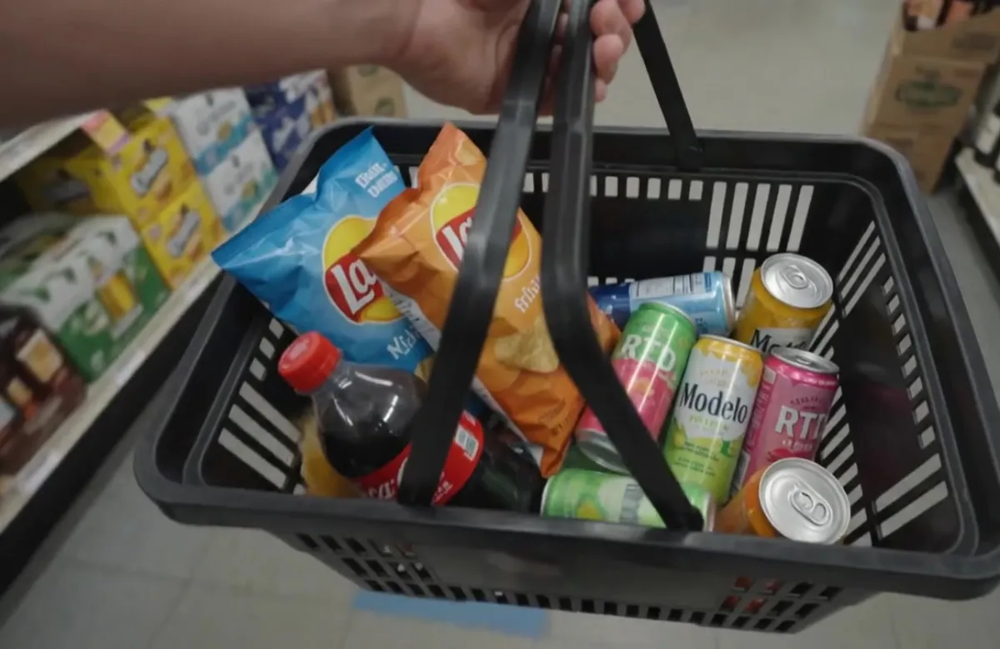

Snacks and candy
Chips, candy, chocolate, and quick add-ons for last-minute stops and gatherings.
Grocery and convenience
Shop snacks, chips, candy, chocolate, soft drinks, energy drinks, juice, mixers, grocery basics, lottery, and everyday convenience items.

Chips, candy, chocolate, and quick add-ons for last-minute stops and gatherings.
Soft drinks, water, energy drinks, juice, mixers, and beverage add-ons.
Ask about cups, disposable items, grocery basics, and practical supplies for your plan.